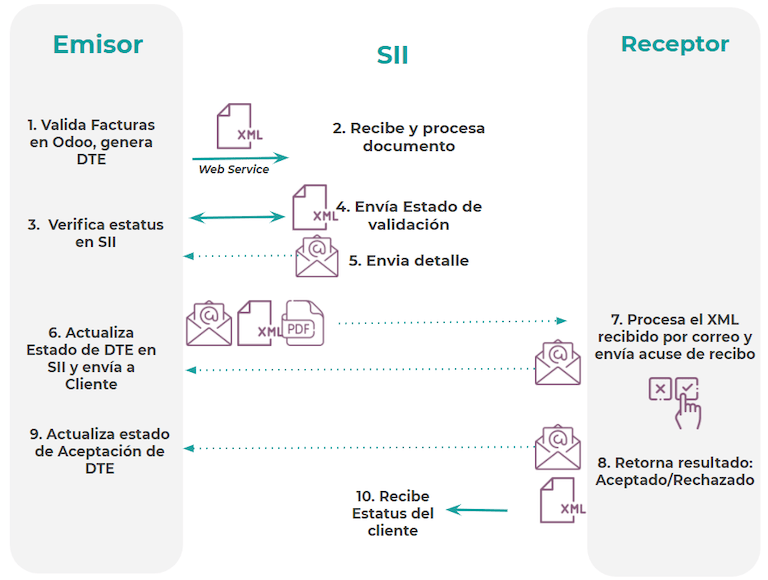
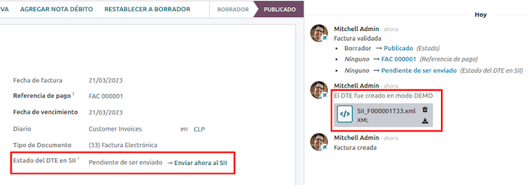
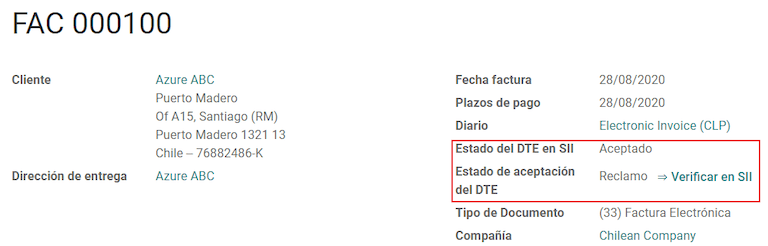
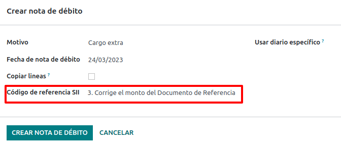
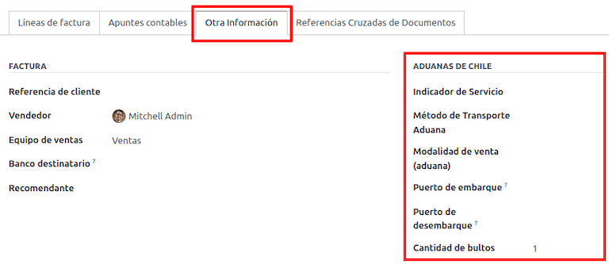
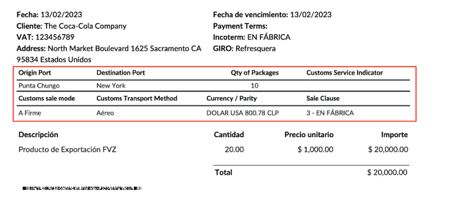

チリ¶
ちなみに
以下の2つのウェビナー録画でローカライゼーションの一般的なプレゼンテーションをご覧いただき、プレイリストでチュートリアルを検索して、チリでOdooを使用する際の実践的なワークフローをご確認下さい。
モジュール¶
以下のモジュールを :ref: インストール<general/install> してチリローカライゼーションの全ての機能を利用しましょう。
名称 |
技術名 |
説明 |
|---|---|---|
チリ - 会計 |
|
SII の規制とガイドラインの下、チリで事業を行うために必要な最低限の会計機能を追加します。 |
チリ - 会計レポート |
|
Propuesta F29 と Balance Tributario (8 columnas) レポートを追加。 |
チリ - 電子請求 |
|
Includes all technical and functional requirements to receive and generate electronic receipts and invoices online based on the SII regulations. |
チリ用商品の電子輸出 |
|
:abbr:SII(Servicio de Impuestos Internos)` および税関規則に基づいて輸出商品の電子顧客請求書を作成するための技術的および機能的要件を含みます。 |
チリ - 電子請求配送ガイド |
|
:abbr:SII(Servicio de Impuestos Internos)` 規定に基づき、ウェブサービスを通じて配送ガイドを作成するための技術的・機能的要件を全て含みます。 |
注釈
Odooはデータベースの作成時に選択された国に応じて、会社に適したパッケージを自動的にインストールします。
チリ - 電子請求配送ガイド モジュールは、在庫 アプリケーションに依存します。
重要
全ての機能は、企業がすでに SII Sistema de Facturación de Mercado 認証プロセスを完了している場合にのみ利用可能です。
会社情報¶
を開き、以下の会社情報が最新で正しく入力されていることを確認して下さい:
会社名
住所:
町名番地
都市
都道府県/州
郵便番号
国
登録番号: 選択した 納税者タイプ の識別番号を入力します。
活動名: 活動コードを4つまで選択します。
会社活動説明: 会社の活動についての簡単な説明を入力して下さい、
会計管理設定¶
次に、 に移動し、指示に従って設定を行います:
会計情報¶
以下を設定 納税者情報:
納税者タイプ 該当する納税者タイプを選択して下さい:
VATの影響を受ける (第1カテゴリ):顧客に税金を請求する請求書の場合
手数料 領収書発行者 (第2カテゴリ)：料金領収書(Boleta)を発行するサプライヤ向け。
最終消費者: 領収書発行のみ。
外国人
SIIオフィス: あなたの会社の SII 地域オフィスを選択して下さい。
電子請求書データ¶
Select your SII Web Services environment:
SII - テスト: SII (Servicio de Impuestos Internos): から取得したテスト用 CAFs (Folio Authorization Code): を使用したテストデータベース用。このモードでは、ファイルを SII に送り、直接接続のフローをテストすることができます。
SII - 本番: 本番データベース用。
SII - デモモード: デモモードでは、ファイルは自動的に作成・受理されますが、 SII には送られません。このため、このモードでは拒絶エラーや*異議ありで受理*は表示されません。全ての内部検証はデモモードでテストすることができます。本番データベースでこのオプションを選択することは避けて下さい。
次に、 法定電子顧客請求書データ と入力します:
SII決議番号
SII決議日
DTE受信メールサーバ¶
DTE 電子メールボックス 電子顧客請求書 は、顧客からの請求書や承諾メールを受信するために定義することができます。このオプションを有効にするには から DTE の受信メールサーバーとして 電子メールボックス 電子顧客請求書 を使用する必要があります。
重要
SIIドキュメントを受信するには、ご自分のEメールサーバを設定する必要があります。 設定方法の詳細については、次のドキュメントを参照して下さい。 OdooでのEメールによるコミュニケーション
DTE受信メールの設定 をクリックして開始します。次に 新規 をクリックしてサーバを追加し、以下のフィールドに入力します:
名前: サーバ名を指定します。
サーバタイプ: 使用するサーバータイプを選択します。
IMAPサーバ
POPサーバ
ローカルサーバ: ローカルスクリプトを使用してメールを取得し、新しいレコードを作成します。スクリプトはこのオプションを選択した 設定 セクションにあります。
Gmail OAuth認証: Gmail API認証情報を一般設定で設定する必要があります。設定への直接リンクは ログイン情報 セクションにあります。
DTEサーバ: このオプションを有効にします。このオプションにチェックを入れると、顧客からの電子請求書や、発行された電子請求書に関する SII からの連絡を受け取るために、このEメールアカウントが使用されます。この場合、このEメールは、 SII サイトのセクション:ACTUALIZACION DE DATOS DEL CONTRIBUYENTE、Mail Contacto SII、Mail Contacto Empresas で申告された両方のEメールと一致する必要があります。
In the Server & Login tab (for IMAP and POP servers):
サーバ名: ホスト名またはサーバのIPを入力します。
ポート: サーバーポートを入力します。
SSL/TLS: 接続がSSL/TLSプロトコルで暗号化されている場合、このオプションを有効にします。
ユーザ名: サーバへのログインユーザー名を入力します。
パスワード: サーバのログインパスワードを入力します。

ちなみに
本番稼動前に、Odooで処理する必要のない仕入先請求書に関連する全てのメールをアーカイブするか、受信トレイから削除することをお勧めします。
証明書¶
電子顧客請求書の署名を生成するには、.pfx`形式のデジタル証明書が必要です。これを追加するには、 :guilabel:`署名証明書 セクションの下にある 署名証明書設定 をクリックします。次に 新規 をクリックして証明書を設定します:
証明書キー: ファイルをアップロード をクリックし、
.pfxファイルを選択します。証明書パスキー: ファイルのパスフレーズを入力します。
サブジェクトシリアル番号: 証明書のフォーマットによっては、このフィールドに自動的に入力されない場合があります。その場合は、証明書の法定代理人 RUT を入力して下さい。
証明書所有者: 特定のユーザのために証明書を制限する必要がある場合は選択してください。全ての仕入先請求書で共有する場合は空欄にして下さい。

警告
If the Certificate Owner field is set to a specific user, and there are no certificates shared with users, then the automatic sending of electronic documents and receipt acknowledgments is disabled.
複数通貨¶
公式通貨レートは Chilean mindicador.cl によって提供されます。 で 間隔 を設定し、レートが自動的に更新されるタイミングを設定するか、別の サービス を選択します。
取引先情報¶
また、電子請求書 SII (Servicio de Impuestos Internos): を送信するには、取引先連絡先の設定が必要です。そのためには アプリを開き、新規または既存の連絡先フォームに以下のフィールドを入力します。
名前
Eメール
識別番号
納税者タイプ
活動説明
In the Electronic Invoicing tab:
DTE Eメール: 取引先の送信者のメールアドレスを入力します。
配送ガイド価格: 配送ガイドに表示する価格を選択します。
注釈
DTE Eメール は電子ドキュメントの送信に使用されるEメールで、電子ドキュメントの一部となる連絡先に設定する必要があります。

ドキュメントタイプ¶
会計ドキュメントは、SII が定義するドキュメントタイプによって分類されます。
ドキュメントタイプはローカライゼーションモジュールのインストール時に自動的に作成され、 で管理することができます。

注釈
いくつかのドキュメントタイプはデフォルトでは無効ですが、 有効 オプションを切り替えることで有効にすることができます。
請求書で使用¶
各取引のドキュメントタイプは、以下によって決定されます:
顧客請求書に関連する仕訳帳で、その仕訳がドキュメントを使用しているかどうかを特定。
発行者と受領者のタイプ(例えば、買い手または売り手の会計体制)に基づいて適用される条件。
仕訳帳¶
Odooの 販売仕訳帳 は通常ビジネスユニットまたはロケーションを示します。
Example
Ventas Santiago.
Ventas Valparaiso.
小売店の場合 POS につき1冊の仕訳帳を発行するのが一般的です。
Example
キャッシャー1
キャッシャー2
購買 取引は単一の仕訳帳で管理できますが、仕入先請求書とは関係のない会計取引を処理するために、複数の仕訳帳を使用する会社もあります。この設定は、以下のモデルを使用することで簡単に行うことができます。
Example
政府への税支払
従業員支払
販売仕訳帳を作成する¶
販売仕訳帳を作成するには、 に移動します。次に、 新規 ボタンをクリックし、以下の必要情報を入力します:
タイプ: 顧客請求書仕訳帳のドロップダウンメニューから 販売 を選択します。
POSタイプ: 販売仕訳帳を電子ドキュメントに使用する場合は、オプション オンライン を選択する必要があります。そうでない場合、以前のシステムからインポートした顧客請求書、または SII ポータル Facturación MiPyme を使用している場合、 手動 オプションを使用することができます。
ドキュメントを使用::仕訳帳がドキュメントタイプを使用する場合、このフィールドをチェックして下さい。このフィールドは、チリで利用可能なドキュメントタイプの異なるセットに関連付けることができる購買仕訳帳と販売仕訳帳にのみ適用されます。デフォルトでは、作成された全ての販売仕訳帳はドキュメントを使用します。
次に 仕訳 タブから 会計情報 セクションに デフォルト収益勘定 と 固有のクレジットノート付番 を定義します。これらのフィールドを設定することは、 使用ケース のいずれかのデビットノートに対して必要です。
CAF¶
A folio authorization code (CAF) is required for each document type that will be issued electronically. The CAF is a file the SII provides to the issuer with the folios/sequences authorized for the electronic invoice documents.
貴社は複数のフォリオをリクエストし、異なるフォリオ範囲にリンクされた複数の CAFs を取得することができます。これらの CAFs は全て仕訳帳で共有されるため、ドキュメントタイプごとにアクティブな CAFs が1つあればよく、全ての仕訳帳に適用されます。
CAF ファイルの取得方法については、SIIドキュメント をご参照下さい。
重要
SII が要求する CAF は、本番とテスト(認証モード)で異なります。環境に応じて、適正な CAF が設定されていることを確認して下さい。
CAFファイルをアップロード¶
SII ポータルから CAF ファイルを取得したら、 へと進み、データベースにアップロードする必要があります。次に 新規 をクリックして設定を開始します。CAF フォームで、 ファイルをアップロード ボタンをクリックして CAF ファイルをアップロードし、 保存 をクリックします。
アップロードされると、ステータスは 使用中 に変わります。現時点では、このドキュメントタイプに取引が使用されると、顧客請求書番号はシーケンスの最初の Folio になります。
重要
CAF ファイルをアップロードする前に、ドキュメントタイプを有効にする必要があります。以前のシステムでいくつかのFolioが使用されていた場合、最初の取引が作成されるときに次に有効なFolioが設定されなければなりません。
勘定科目表¶
勘定科目表は、ローカリゼーションモジュールに含まれるデータセットの一部としてデフォルトでインストールされています。口座は自動的に以下にマッピングされます:
税金
デフォルト買掛金勘定
デフォルト売掛金勘定
転送アカウント
コンバージョン率
参考
税金¶
ローカリゼーションモジュールの一部として、税金は関連する会計勘定と設定で自動的に作成されます。これらの税金は から管理することができます。
チリにはいくつかの税制がありますが、最も一般的なものは以下の通りです:
VAT: 通常の付加価値税にはいくつかの税率があります。
ILA: アルコール飲料用の税。
参考
使用とテスト¶
電子請求ワークフロー¶
チリのローカライズでは、電子請求のワークフローには顧客請求書の発行と仕入先請求書の受領が含まれます。以下の図は、 SII、顧客、仕入先にどのように情報が共有されるかを説明しています。
顧客請求書の発行¶
取引先と仕訳帳が作成・設定された後、顧客請求書は標準的な方法で作成されます。チリでは、納税者に基づいて自動的に選択されるドキュメントタイプが違いの1つです。もし必要であれば、 に移動して、請求書上でドキュメントタイプを手動で変更することができます。

重要
ドキュメントタイプ33 電子顧客請求書には、少なくとも1つの税込項目がなければなりません、 そうでない場合、 SII はドキュメントの検証を拒否します。
検証とDTEステータス¶
手動または販売オーダから自動生成された全ての請求書情報が入力されたら、請求書を検証します。顧客請求書が計上された後:
DTE ファイルは自動的に作成され、チャターに記録されます。
The DTE SII status is set as Pending to be sent.

The DTE status is updated automatically by Odoo with a scheduled action that runs every day at night, if the response from the SII is needed immediately, you can do it manually as well by following the DTE status workflow:

最初のステップは、 DTE を SII に送信することです。これは Enviar Ahora ボタンをクリックして手動で送信することができます。これにより、顧客請求書用の SII追跡番号 が生成され、 SII からEメールで送られた詳細を確認するために使用されます。その後、 DTEステータス が ステータスを要求 に更新されます。
SII (Servicio de Impuestos Internos): の応答が受信されると、Odooは DTEステータス`を更新します。手動で行うには、 :guilabel:`SII のボタンをクリックして下さい。結果は 承認済, 意義ありで承認済 または 拒否済 のいずれかになります。

重要
SII では、承認・拒否の前に中間ステータスがあります。スムーズな手続きのために SIIで確認 をクリックし続け ない ことをお勧めします。

SII からの最終的な回答は、これらの値のいずれかを取ることができます:
承認済: 顧客請求書の情報が正しいことを示し、当社のドキュメントは会計的に有効となり、自動的に顧客に送信されます。
異議ありで承認済: は、顧客請求書の情報は正しいが、小さな問題があることを示します。 それにもかかわらず、そのドキュメントは会計的には有効となり、自動的に顧客に送付されます。
拒否済: 顧客請求書の情報が間違っており、訂正が必要であることを示します。詳細は SII に登録したEメールに送信されます。Odooで適切に設定されていれば、メールサーバが処理された後、詳細はチャットでも取得されます。
顧客請求書が拒否された場合は、以下の手順に従って下さい:
ドキュメントを ドラフト に変更します。
チャターの SII から受け取ったメッセージに基づいて、必要な修正を行います。
請求書を再度記帳します。

相互参照¶
別の会計ドキュメントの結果として顧客請求書が作成された場合、その顧客請求書に関連する情報を 相互参照 タブに登録する必要があります。このタブは一般的にクレジットまたはデビットノートに使用されますが、場合によっては顧客請求書にも使用できます。クレジットおよびデビットノートの場合、Odooによって自動的に設定されます。

請求書PDFレポート¶
顧客請求書が SII に受理され、PDFが印刷されると、そのドキュメントが会計的に有効であることを示す会計的要素が含まれます。

重要
Odoo SHまたはオンプレミスでホストされている場合、手動で pdf417gen ライブラリをインストールする必要があります。次のコマンドを使用してインストールして下さい: pip install pdf417gen.
商業検証¶
顧客へ請求書が送付された後:
DTE取引先ステータス は 送信済 に変わります。
顧客は受信確認メールを送信する必要があります。
その後、商取引条件と顧客請求書のデータが正しければ、承認確認書が送られ、そうでなければクレームが送られます。
フィールド DTE承認ステータス は自動的に更新されます。

クレームを受けた請求書処理¶
一旦顧客請求書が SII に受理されると、Odoo上で取消することはできません。万が一、顧客からクレームがあった場合は、クレジットノートを発行して顧客請求書を取消するか、訂正するのが正しい方法です。詳細は クレジットノート セクションをご参照下さい。
よくあるエラー¶
SII から拒絶される理由は複数ありますが、ここではよくあるエラーとその解決方法をご紹介します:
- エラー:
RECHAZO- DTE Sin Comuna Origenヒント: 会社の住所が都道府県、市を含めて正しく記入されていることを確認して下さい。 - エラー:
en Monto - IVA debe declararseヒント: 請求明細には、1つのVAT税が含まれているはずですので、各請求明細行に1つずつ追加して下さい。 - エラー:
Rut No Autorizado a Firmarヒント: 入力された RUT が電子請求書として認められていない場合、電子請求書を発行するために、会社の RUT が正しく、 SII で有効であることを確認して下さい。 - エラー:
Fecha/Número Resolucion Invalido RECHAZO- CAF Vencido : (Firma_DTE[AAAA-MM-DD] - CAF[AAAA-MM-DD]) > 6 mesesヒント: 使用しているCAFの有効期限が切れているため、このドキュメントに関連する新しいCAFを追加してみて下さい。 - エラー:
Element '{http://www.sii.cl/SiiDte%7DRutReceptor': This element is not expected. Expected is ( {http://www.sii.cl/SiiDte%7DRutEnvia ).ヒント: ドキュメントタイプ フィールドと VAT フィールドが顧客とメインの会社に設定されていることを確認して下さい。 - エラー:
Usuario sin permiso de envio.ヒント: このエラーは、貴社が:abbr:`SII (Servicio de Impuestos Internos) ` - Sistema de Facturación de Mercadoの認証プロセス<https://www.sii.cl/factura_electronica/factura_mercado/proceso_certificacion.htm>`_ に合格していない可能性が高いことを示しています。この認証はOdooのサービスには含まれませんが、いくつかの代替手段をご案内できますので、アカウントマネジャーまたはカスタマーサポートまでお問い合わせ下さい。すでに認証プロセスを通過している場合、証明書の所有者とは異なるユーザが DTE ファイルを SII に送信しようとすると、このエラーが表示されます。 - エラー:
CARATULAヒント: このエラーが表示される理由は5つあり、その全てがXMLの Caratula セクションに関連しています:会社の RUT 番号が間違っているか欠落しています。
証明書所有者 :abbr:`RUT (Rol Único Tributario)`番号が間違っているか欠落しています。
The SII's RUT number (this should be correct by default) is incorrect or missing.
解決日が間違っているか、欠落しています。
解決番号が間違っているか欠落しています。
クレジットノート¶
有効な顧客請求書に対して取消や訂正が必要な場合、クレジットノートを作成しなければなりません。クレジットノートには CAF ファイルが必要であり、 SII（Servicio de Impuestos Internos）`の :guilabel:`ドキュメントタイプ 61 として識別されることを考慮することが重要です。各ドキュメントタイプに CAF を読み込むプロセスの詳細については、 CAF セクション を参照して下さい。

使用ケース¶
参照ドキュメントを取消す¶
請求書を取消または無効にする必要がある場合、 に移動し、必要な請求書を選択します。この場合、 SII の参照コードは自動的に Anula Documento de referencia に設定されます。

参照ドキュメントを修正する¶
例えば、元の請求書の住所の通り名が間違っているなど、請求書情報の訂正が必要な場合は、 クレジットノートを追加 ボタンを使い、 部分返金 を選択し、 テキスト訂正のみ オプションを選択します。この場合、 SII参照コード フィールドは自動的に 参照ドキュメントテキストを修正 に設定されます。

価格 0.00 と訂正されたテキストでOdooは顧客請求書にクレジットノートを作成します。
重要
この使用ケースのために、販売仕訳帳で デフォルト貸方勘定 を必ず定義して下さい。
参照ドキュメントの金額を修正します¶
金額の訂正が必要な場合は、 クレジットノートを追加 ボタンを使用し、 部分返金 を選択します。この場合、 SII 参照コード は自動的に Corrige el monto del Documento de Referencia に設定されます。

デビットノート¶
チリローカライズでは、クレジットノートに加えてデビットノートも デビットノートを追加 ボタンを使って作成することができます。
使用ケース¶
顧客請求書に債務を追加する¶
デビットノートの主な使用例は、既存の顧客請求書の金額を増やすことです。そのためには、参照コードSII フィールド用に 3. Corrige el monto del Documento de Referencia を選択します。
この場合、Odooは自動的に 相互参照 タブに:guilabel:`ソース請求書`を含めます。

ちなみに
デビットノートを追加できるのは、SIIが既に受理している顧客請求書のみです。
クレジットノートを取消す¶
チリでは、デビットノートは有効なクレジットノートを取消すために使用されます。これを行うには、 デビットノートを追加 ボタンをクリックし、 参照コードSII フィールドの 1: Anula Documentos de referencia オプションを選択します。

仕入先請求書¶
チリローカライゼーションの一環として、受信メールサーバーを :abbr:`SII (Servicio de Impuestos Internos)' に登録したものと一致するように設定することができます:
仕入先請求書 DTE を自動的に受信し、その情報を基に取引先請求書を作成します。
受信確認を自動的に仕入先に送信します。
ドキュメントを受理または請求し、このステータスを取引先に送信します。
受信¶
添付された DTE 付きの仕入先のEメールが届き次第:
仕入先請求書は、XMLに含まれる全ての情報をマッピングします。
受付確認メールが業者に送信されます。
DTEステータス は Acuse de Recibido Enviado に設定されます。
承諾¶
仕入先請求書の商業情報がすべて正しければ、 Aceptar Documento ボタンを使ってその書類を受理することができます。これが完了すると、 DTE承諾ステータス が 承諾済 に変わり、受諾のメールが仕入先に送信されます。

クレーム¶
商業上の問題がある場合や仕入先請求書の情報が正しくない場合は、 クレーム ボタンを使用して、検証する前にドキュメントを請求することができます。これを行うと DTE承諾ステータス が クレーム に変わり、拒否メールが仕入先に送信されます。

If you claim a vendor bill, the status changes from Draft to Cancel automatically. Considering this as best practice, all the claimed documents should be cancelled as they won't be valid for your accounting records.
電子購買請求書¶
電子顧客請求書 は l10n_cl_edi モジュールに含まれる機能です。
電子請求 の全ての設定(有効な会社証明書のアップロード、マスターデータの設定など)が完了すると、電子請求書には専用の CAFs が必要になります。電子購買請求書のための CAFs の取得方法の詳細については、 CAFドキュメント を参照して下さい。
電子仕入請求書は、仕入先に電子仕入請求書を迅速に発行する義務がない場合に便利です。それでも、義務として、購入証明としてドキュメントを SII に送信する必要があります。
設定¶
仕入先請求書から電子顧客請求書を作成するには、ドキュメントを使用する 機能を有効にした仕訳帳で請求書を作成する必要があります。以下の手順で、既存の仕訳帳を変更したり、新しい仕訳帳を作成することができます。
既存の仕訳帳を変更したり、新しい仕訳帳を作成したりするには、 に移動します。次に 新規 ボタンをクリックし、以下の必要情報を入力します:
タイプ: 仕入先請求書のドロップダウンメニューから 購買 を選択します。
ドキュメントを使用: このフィールドをチェックすると、仕訳帳は電子ドキュメント(この場合は電子顧客請求書)を生成することができます。
電子顧客請求書の作成¶
このタイプのドキュメントを作成するには、Odooで仕入先請求書を作成する必要があります。そのためには に移動し、 新規 ボタンをクリックします。
電子購入請求書の情報が全て入力されたら、 ドキュメントタイプ フィールドで (46)電子購入請求書 オプションを選択します:
仕入先請求書が計上された後:
DTE ファイル(電子納税ドキュメント)が自動的に作成され、チャターに追加されます。
DTE SIIステータス は 送信待ち に設定されます。
Odooはスケジュールされたアクションを使用して、毎晩自動的に DTEステータス を更新します。SII からすぐに返信をもらうには、SIIに送信 ボタンをクリックして下さい。
配送ガイド¶
モジュール 配送ガイド をインストールするには、 にアクセスし、Chile (l10n_cl) を検索します。次に チリ - 電子請求配送ガイド モジュールの :guilabel:インストール` をクリックします。
注釈
チリ - 電子請求配送ガイド は Chile - Facturación Electrónica と依存関係にあります。Odooは 配送ガイド モジュールをインストールすると、依存関係にあるものを自動的にインストールします。
配送ガイド モジュールには、DTE から SII へ送信する機能と、配送用のPDFレポートスタンプが含まれています。
電子請求 の全ての設定(有効な会社証明書のアップロード、マスターデータの設定など)が完了したら、配送ガイドには専用の CAF が必要です。電子配送ガイド用の CAF の取得方法については、 CAFドキュメント をご参照下さい。
配送ガイド用価格 設定で以下の重要な情報を確認して下さい:
販売オーダから: 配送ガイドは販売オーダからプロダクト価格を受取り、ドキュメントに表示します。
プロダクトテンプレートから:Odooはプロダクトテンプレートで設定された価格をドキュメントに表示します。
価格表示なし: 配送ガイドに価格が表示されていません。
電子配送ガイドは、ある場所から別の場所へ在庫を移動させるために使用され、販売、サンプリング、委託、内部移動など、基本的にあらゆるプロダクトの移動を表すことができます。
販売プロセスからの配送ガイド¶
警告
配送ガイドは、1ページを超えたり、60以上のプロダクトを含んでは いけません。
販売オーダが作成され確認されると、配送オーダが作成されます。配送オーダの検証後、配送ガイドを作成するオプションが有効になります。

警告
初めて 配送ガイドを作成 をクリックすると、次のような警告メッセージがポップアップ表示されます:
No se encontró una secuencia para la guía de despacho. Por favor, establezca el primer número
dentro del campo número para la guía de despacho

この警告メッセージは、ユーザが配送ガイドを生成するためにOdooが取るべき次のシーケンス番号(例えば次に使用可能な CAF 番号)を指示する必要があることを意味します。最初のドキュメントが正しく生成された後、Odooは次の配送ガイドを生成するために CAF ファイル内の次に使用可能な番号を使用します。
配送ガイドが作成された後:
DTE ファイル(電子税ドキュメント)は自動的に作成され、 チャター に追加されます。
DTE SIIステータス は 送信待ち に設定されます。

DTEステータス はOdooによって毎晩スケジュールされたアクションで自動的に更新されます。SII からすぐに回答を得るには、 SIIに今すぐ送信 ボタンを押して下さい。
配送ガイドが送信されたら、 配送ガイドを印刷 ボタンをクリックして印刷することができます。

納品ガイドには、印刷時にドキュメントが会計的に有効であることを示す財政要素が含まれます(Odoo SH または オンプレミス でホストされている場合は、 顧客請求書PDFレポートセクション に記載されている pdf417gen ライブラリを手動で追加することを忘れないで下さい)。
電子領収書¶
電子領収書`モジュールをインストールするには、 にアクセスし、チリ (l10n_cl) を検索します。そして チリ - 電子領収書 モジュールの インストール をクリックします。
注釈
チリ - 電子領収書`は :guilabel:`Chile - Facturación Electrónica と依存関係にあります。Odooは 電子請求配送ガイド モジュールをインストールすると、依存関係にあるものを自動的にインストールします。
電子請求 の全ての設定(有効な会社証明書のアップロード、マスターデータの設定など)が完了したら、電子領収書には専用の CAFs の取得方法の詳細については、 CAFドキュメント を参照して下さい。
電子領収書は、顧客が電子請求書を必要としない場合に便利です。デフォルトでは、データベース内に 匿名最終消費者 という名前の取引先があり、 RUT 66666666-6 というジェネリックと 最終消費者 という納税者タイプを持ちます。この取引先は電子領収書に使用することも、同じ目的のために新しいレコードを作成することもできます。
電子領収書は一般的な RUT で最終消費者に使用されるべきですが、特定の取引先に使用することもできます。取引先と仕訳帳が作成され設定されると、電子領収書は電子請求書と同じように標準的な方法で作成されますが、顧客請求書フォームでドキュメントタイプ (39)電子領収書 を選択する必要があります:

検証とDTEステータス¶
電子領収書の情報が全て入力されたら、手動(または自動)で販売オーダから領収書を検証します。デフォルトでは、ドキュメントタイプ として 電子請求書 が選択されていますが、領収書を正しく検証するために、ドキュメントタイプ を編集して 電子領収書 に変更して下さい。
領収書が記帳された後:
DTE ファイル(電子税ドキュメント)は自動的に作成され、 チャター に追加されます。
DTE SIIステータス は 送信待ち に設定されます。

DTEステータス はOdooによって毎日夜にスケジュールされたアクションで自動的に更新されます。SII からすぐに返答を得るには、 SIIに今すぐ送信 ボタンを押して下さい。
電子領収書のワークフローも同様の流れになりますので、電子請求書については DTE ワークフロー をご参照下さい。
商品の電子輸出¶
商品の電子輸出 モジュールをインストールするには、 に行き、チリ (l10n_cl) を検索します。次に インストール をクリックし、 チリ用商品の電子輸出 モジュールをインストールします。
注釈
チリ - チリ用商品の電子輸出 は チリ - Facturación Electrónica と依存関係にあります。
電子請求書 のための全ての設定(有効な会社証明書のアップロード、マスターデータの設定など)が完了したら、商品の電子輸出には専用の CAFs が必要です。電子領収書用の CAFs の取得方法の詳細については、 CAFドキュメント をご参照下さい。
商品輸出用の電子顧客請求書は、SII で使用されるだけでなく、税関でも使用され、税関が要求する情報が記載された税ドキュメントです。
連絡先設定¶

チリ税関¶
電子輸出顧客請求書を作成する際、 その他情報 タブにあるこれらの新しいフィールドは、チリの規制に準拠するために必要です。
PDFレポート¶
顧客請求書が SII に受理され、PDFが印刷されると、そのドキュメントが財政的に有効であることを示す会計要素と税関に必要な新しいセクションが含まれます。
eコマース電子請求¶
チリeコマース モジュールをインストールするには、 にアクセスし、技術名 l10n_cl_edi_website_sale でモジュールを検索し、 有効化 ボタンをクリックします。

このモジュールは、以下の機能と設定を可能にします:
eコマース アプリケーションからの電子ドキュメントの生成
eコマース アプリケーションの必須会計フィールドのサポート
最終顧客に、購入時に作成する電子ドキュメントを決定させることができます。
チリ 電子請求 フローの設定が全て完了したら、eコマースフローを統合するために以下の設定が必要です。
販売プロセス中に電子ドキュメントを生成するようにウェブサイトを設定するには、 に進み、 自動請求 機能を有効にして下さい。この機能を活動させることで、オンライン決済が確認された際に電子ドキュメントが自動的に生成されるようになります。

自動請求 機能でドキュメントを作成するにはオンライン決済を確認する必要があるため、関連するウェブサイトに決済プロバイダーを設定する必要があります。
注釈
Odooでサポートされている決済プロバイダーとその設定方法については オンライン支払 ドキュメントをご覧下さい。
また、オンライン支払が確認された際に顧客請求書が発行されるようにプロダクトを設定することをお勧めします。そのためには、 に行き、希望するプロダクトのプロダクトテンプレートを選択します。そして、 請求ポリシー を オーダ済数量 に設定します。

請求フロー¶
チリの顧客は、チェックアウトの際に追加プロセスで 顧客請求書 または 投票用紙 のどちらを購入するか選択することができます。

顧客が 電子請求書 オプションを選択した場合、 活動の解説、 識別番号、 DTEメールアドレス を含む会計フィールドの入力が必要になります。

顧客が 電子領収書 オプションを選択した場合、次のステップに進み、Consumidor Final Anónimo 連絡先に対して電子ドキュメントが作成されます。
チリ以外の国のお客様は、Odooが自動的に電子領収書を作成します。
注釈
eコマースでの購買で輸出が必要な場合、顧客は電子輸出請求書 (キュメントタイプ110) を作成するために貴社に連絡する必要があります。これは 会計 アプリから行うことができます。
POS電子請求¶
POS用チリモジュール をインストールするには、Odooメインダッシュボードの アプリケーションにアクセスし、技術名 l10n_cl_edi_pos でモジュールを検索し、 有効化 ボタンをクリックします。

このモジュールは、以下の機能と設定を可能にします:
POS アプリケーションから電子ドキュメントを生成
*POS*アプリケーションで作成された連絡先の必須会計フィールドをサポートします。
最終消費者に、購買時に作成する電子ドキュメントの種類を決定させることができます。
チケットにQRコードまたは5桁のコードを印刷し、電子顧客請求書にアクセスできます。
必要な会計情報を連絡先に設定するには、取引先情報 セクションを確認するか、連絡先を直接変更します。 に移動し、以下のフィールドを編集します:
名前
Eメール
識別タイプ
納税者タイプ
タイプGiro
DTE Eメール
RUT

プロダクトを設定するには、 に移動し、プロダクトレコードを選択します。プロダクトフォームの 販売 タブで、商プロダクトを POS用に利用可能 としてマークする必要があります。これにより、POS アプリでプロダクトを販売できるようになります。

オプションとして、以下の機能が で設定可能です:
チケットでQRコードを使用する: この機能により、ユーザの領収書にQRコードが印刷され、購買後に顧客請求書を簡単に要求することができます。
チケットにコードを生成する: この機能により、領収書に5桁のコードが生成され、ユーザが顧客ポータルを通じて請求書を要求できるようになります。
請求フロー¶
以下のセクションでは、POS アプリケーションの顧客請求書発行フローについて説明します。
電子領収書:匿名のエンドユーザ¶
電子請求書を要求しない匿名ユーザで購買した場合、Odooは自動的にオーダの連絡先として Consumidor Final Anónimo を選択し、電子領収書を生成します。

注釈
顧客が購入した商品の返品によりクレジットノートを要求した場合、クレジットノートは 会計 アプリを使用して作成する必要があります。詳しい手順は クレジットノートと払戻 ドキュメントを参照して下さい。
電子領収書: 特定の顧客¶
特定のユーザが電子請求書を要求せずに購買した場合、Odooは自動的にオーダの連絡先を Consumidor Final Anónimo として選択し、領収書に必要な顧客連絡先とその会計情報を選択または作成することができます。

注釈
このタイプの購買の返品が原因で顧客がクレジットノートを要求した場合、クレジットノートと返品プロセスは POS セッションから直接管理することができます。
電子請求書¶
顧客から電子請求書を請求された場合、必要な連絡先を選択または作成することができます。支払いが完了したら、顧客請求書 オプションを選択し、ドキュメントを作成します。

注釈
電子領収書と顧客請求書の両方で、プロダクトが税金の影響を受けない場合、Odooはそれを検出し、非課税販売に適したドキュメントタイプを生成します。
返品¶
電子領収書 (Consumidor Final Anónimo には生成されません)および電子顧客請求書では、 返金 ボタンを選択することで、 POS オーダで販売されたプロダクトの返品プロセスを管理することができます。

オーダは、オーダステータスまたは連絡先で検索することができ、顧客の元のオーダに基づいて払戻を選択することができます。

When the return payment is validated, Odoo generates the necessary credit note, referencing the original receipt or invoice, partially or fully cancelling the document.
財務レポート¶
Balance tributario de 8 columnas¶
このレポートは、勘定科目を詳細に(それぞれの残高とともに)提示し、その起源に従って分類し、評価期間内に事業が有していた損益の水準を決定します。
このレポートは で、 レポート フィールドで チリ会計残高 (8 Columns) (CL) オプションを選択すると表示されます。


Propuesta F29¶
帳票 F29 は、SII が納税者に提供する新しいシステムで、購買と販売帳 に代わるものです。このレポートは、購買帳(CR)と販売帳(RV)に統合されています。その目的は、VATに関連する取引をサポートし、その管理と申告を改善することです。
重要
Odooの Propuesta F29 (CL) レポートは、最終的な税申告のための最初の提案として、基本的な法的要件をカバーしています。
この記録は、SII が受領した電子税ドキュメント(DTE)によって提供されます。
このレポートは で レポート オプション Propuesta F29 (CL) を選択すると表示されます。

PPM と 会計年度の比例係数 を から設定することができます。

または ✏️ (鉛筆) アイコンをクリックすることでレポート内で手動で。